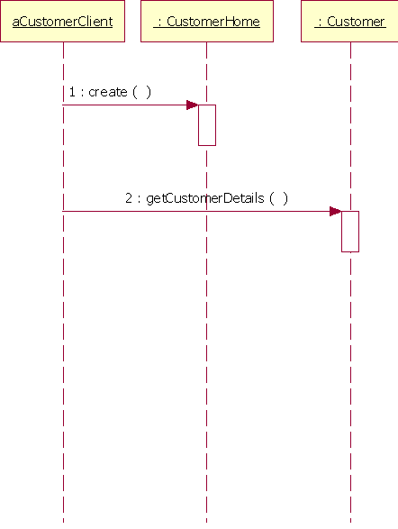
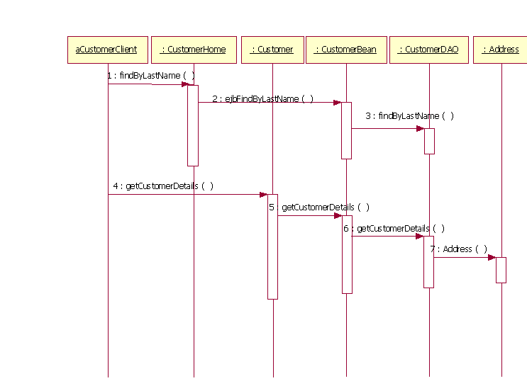

| Directriz: Identificación de Enterprise JavaBeans (EJB) |
 |
|
| Elementos relacionados |
|---|
IntroducciónEsta directriz se centra en identificar EJB. En la sección Directriz: Enterprise JavaBean (EJB) se proporciona ayuda adicional sobre los EJB. Identificación de EJBHabitualmente los EJB sirven para implementar un objeto empresarial del lado del servidor que precisa soporte para las transacciones, la seguridad y acceso remoto, o que funciona con datos compartidos (como por ejemplo actualizando información de cuentas). Los EJB a menudo se identifican al identificar clases de diseño en el Producto de trabajo: clases de análisis. Las clases de control son buenas candidatas como beans de sesión, puesto que los beans de sesión se utilizan para proporcionar lógica de control. Las clases de entidad son buenas candidatas como beans de entidad, puesto que los beans de entidad se utilizan para los datos persistentes. Consulte también las siguientes secciones para conocer directrices más específicas:
Comparación entre beans de sesión, de entidad y controlados por mensajesResumiendo algunas de las directrices mencionadas con anterioridad, en esta tabla se identifican los roles que desempeñan los distintos EJB, la forma en la que se accede a los mismos y la naturaleza de su estado.
Modelado de EJBLos EJB se modelan como un conjunto de clases con estereotipos. De forma específica, las clases de bean y todas las clases de interfaz de EJB. Las interfaces EJB se modelan como clases con estereotipos, y no como interfaces UML, por las razones que se tratan en la sección Directriz: interfaces para aplicaciones J2EE. Las relaciones entre clases de bean y las interfaces EJB se modelan como dependencias desde la clase de bean a las interfaces y no como relaciones de realización. Habitualmente, la implementación Java de una construcción se representa como una realización entre una interfaz y una clase. Sin embargo, las clases EJB no implementan sus clases de interfaz y, por lo tanto, es más adecuado una dependencia. En el siguiente diagrama se muestra un ejemplo. Consulte la sección Directriz: diseño de subsistemas para aplicaciones J2EE para obtener más información sobre este ejemplo en concreto.
Ejemplo de clases de ayudante y EJB A continuación se indican los estereotipos UML aplicables al modelado de EJB.
Habitualmente, un EJB se agrupa en un subsistema, junto con clases y EJB estrechamente relacionados. Esto permite al desarrollador el proporcionar una vista de especificación de EJB que es independiente de su implementación, así como agrupar con otros elementos de diseño para proporcionar un nivel más alto de abstracción. Consulte la sección Directriz: diseño de subsistemas para aplicaciones J2EE para conocer más detalles. Consulte también la especificación de correlación UML/EJB (RSC01) para ver una lista completa de estereotipos para representar construcciones EJB. Modelado de beans controlados por mensajesModele dependencias a los temas o colas a los que se suscribe el bean controlado por mensajes. Consulte la sección Directriz: descripción de la arquitectura de tiempo de ejecución para aplicaciones J2EE para obtener más ayuda sobre la forma en la que modelar elementos concurrentes en una aplicación J2EE. Modelado de propiedades EJBLa utilización de mecanismos como, por ejemplo, la persistencia controlada mediante contenedor, las transacciones o la autorización, se puede modelar como propiedades adicionales de la clase de bean, o simplemente incluir en una descripción de texto asociada con la clase de bean. Utilice los diagramas de secuencias para considerar casos de ejemplo que utilicen estos mecanismos. Modelado de interacciones de objetos EJBLos diagramas de interacciones (diagramas de secuencias y colaboración) sirven para mostrar el comportamiento dinámico de los EJB y de la interacción de elementos que no son EJB (incluyendo componentes web y aplicaciones de cliente externa) con EJB. Estos diagramas de interacciones son esencialmente los mismos que los descritos en la sección Tarea: diseño de guiones de uso. Las interacciones se pueden mostrar con el bean como una caja negra, interactuando sólo con las interfaces de EJB. Las interacciones también podrían mostrar la implementación del bean mostrando interacciones entre las interfaces EJB y la clase de implementación del bean. Observe que generalmente no se muestra la interacción de intervención con el contenedor. Los beans controlados por mensajes consumen de forma asíncrona los mensajes que reciben de otros orígenes. Se podría elegir mostrar el flujo de un mensaje asíncrono directamente desde un productor a un consumidor, o podría modelar la relación de forma más precisa modelando temas y colas. En la figura 2 se muestra un ejemplo de un diagrama de secuencias que muestra una interacción de una clase de cliente con interfaces de EJB.  Figura 2: interacción de una clase de cliente con interfaces EJB. La figura 3 es un diagrama de secuencias similar al de la figura 2, pero que muestra interacciones con la implementación de bean. Figura 3: ejemplo de una interacción con una implementación de EJB. Alternativas de modeladoEl EJB, como un grupo de una clase de implementación de bean más interfaces EJB, también se puede modelar como un subsistema o componente. Algunos diseñadores podrían también elegir el modelar un EJB como una clase y asignar estereotipos a las operaciones para indicar si pertenecen a las interfaces "inicial", "local" o "remota". De esta forma se proporciona una notación más compacta que con las otras alternativas. |

© Copyright IBM Corp. 1987, 2006. Reservados todos los derechos. |